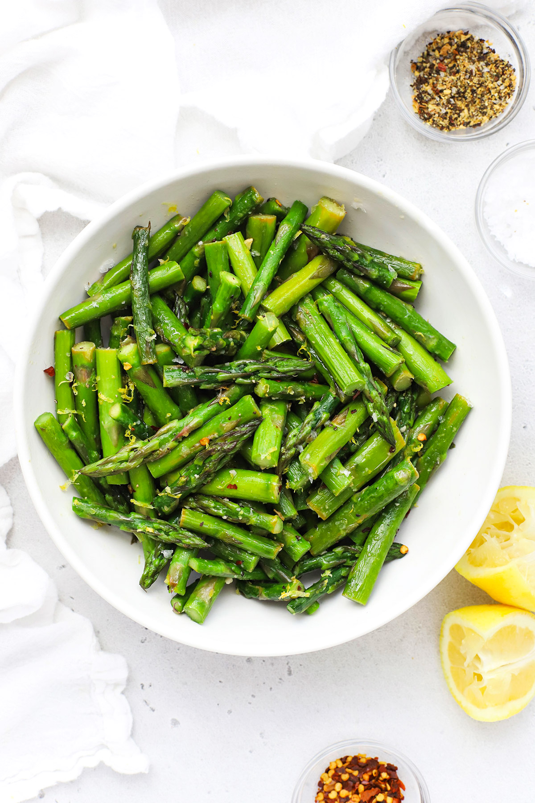

Easy Lemon Asparagus

Lemon Asparagus - Easy lemon asparagus seasoned with fresh lemon & other delicious flavors. You'll love this
simple healthy side dish! (Vegan, Paleo, Whole30)
How to Make Lemon Asparagus
Ingredients
- 1 Pound Asparagus
- 2 Tablespoons olive oil (can sub butter, if desired)
- Zest of 1 lemon
- 1-2 Tablespoons of fresh lemon juice
- 1/4-1/2 teaspoon salt (or, to taste)
- 1/4-1/2 teaspoon pepper (or, to taste)
- Pinch (1/8 teaspoon) red pepper flakes
- Optional: 1 clove garlic, parmesan cheese, or fresh herbs
Instructions
- TRIM YOUR ASPARAGUS. Start by trimming your asparagus stalks. Look for the place on each
stalk where the green turns to white or purple. (The white/purple part is the woody end) Use a sharp knife
to trim the woody end off of each stalk and discard. (You can line up several stalks at a time to make
things easy!)
- CUT INTO 1-2″ PIECES. Cut the trimmed asparagus into small, bite-sized pieces. We usually
cut ours in 1-2″ lengths.
- HEAT YOUR OIL & COOK THE ASPARAGUS. In a large skillet, heat the olive oil over medium
heat. Add the cut asparagus with a pinch of salt and pepper, and sauté, stirring regularly. Cook 5-8 minutes
or so, until the asparagus is vibrant green and crisp-tender. The exact amount of time will vary based on
how thick your asparagus is-thicker asparagus takes longer to cook than thinner asparagus.)
- SEASON & FLAVOR. Turn off the heat and stir in a clove of garlic (if using), the red pepper
flakes (if
using), and 1-2 Tbsp. fresh lemon juice.
- GARNISH & ADJUST TO TASTE. Finish the asparagus with the fresh lemon zest, and another
sprinkle of salt and
pepper.
Nutrition Facts
Serves 4
Serving Size: 1/4 recipe
Calories Per Serving: 56
|
|
|
|
% Daily Value |
| Total Fat 3.7g |
5% |
|
Cholesterol 0mg |
0% |
| Sodium 147.9mg |
6% |
|
Total Carbohydrate 5.5g |
2% |
| Dietary Fiber 2.6g |
9% |
|
Sugars 2.4g |
|
| Protein 2.6g |
5% |